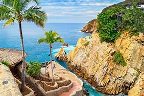
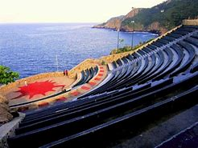
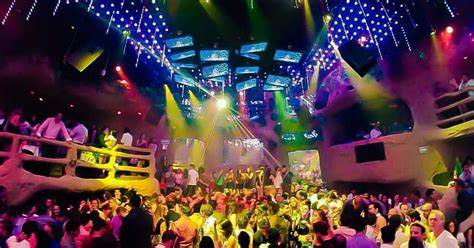

Acapulco es reconocido por haber sido el primer puerto turístico internacional de México, pero también por la calidez de su gente, su amplia oferta turística con actividades para todos los gustos y edades como sol y playa, cultura, gastronomía, bienestar y relajación, naturaleza, aventura, romance, compras y los mejores eventos, lo convierten en uno de los principales destinos de playa en México.
Su indiscutible belleza natural está enmarcada por más de 50 kilómetros de playa, dos bahías rodeadas de exuberantes montañas y dos lagunas escoltadas por impresionantes manglares que te harán disfrutar de este destino icónico de México de una forma diferente y única.